Portafolio
Propósito
Profundizar en
conocimientos y
competencias
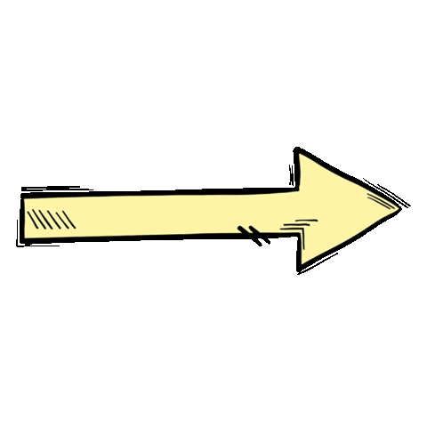
Teoría y
ejemplos prácticos
El fenómeno de
la localización
¿Qué es la localización (L10n)?
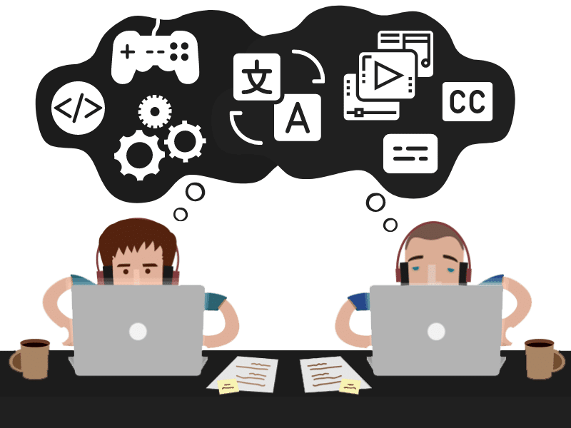
¿Es lo mismo que traducir?
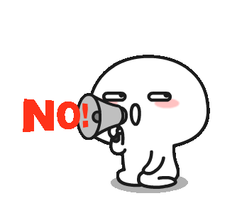
Localización: hacer local aquello que funcione y se use en un medio físico o tecnológico por diferentes motivos.
Traducción vs. localización
| Traducción | Localización |
|---|---|
| Lengua origen > Lengua meta | Adaptación a lengua meta |
| Lenguaje | Lenguaje, cultura, técnica |
| Contenido visual no modificado | Contenido visual modificado |
| Sin cambios de código/interfaz | Adaptación de interfaz y código básico |
| Manuales, obras literarias, artículos, documentos | Programas, softwares, apps, videojuegos |
Ejemplos
Haz click en cada botón para ver los ejemplos
Herramientas utilizadas
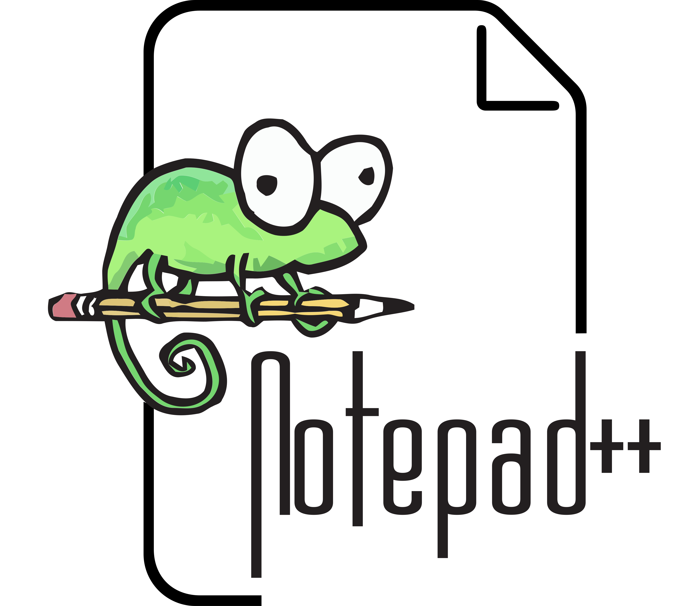
Notepad++(HTML)
 Wave
Wave (Accesibilidad)
(videojuegos)
(sitios web)
(portafolio)
Proceso de aprendizaje
➔ Semana 1
- HTML
- Metodología
- Lenguajes
- Elementos
- Accesibilidad
- Reflexión personal y resultados
Trabajo realizado en el aula. Yo tenía mucho interés por la programación, así que esta actividad ha sido la excusa perfecta para aprender lenguaje HTML.
La herramienta utilizada fue Notepad++ para modificar archivos de texto y BlueGriffon para localizar webs ya creadas.
Hemos aprendido la estructura básica de las páginas web, junto con las etiquetas y atributos más comunes. Y también hemos apredido a hacer las webs accesibles.
Un concepto muy importante fue la distinción entre rutas absolutas y relativas.
Wave
 HTML
HTML
 CSS
CSS
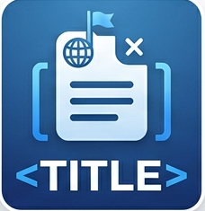
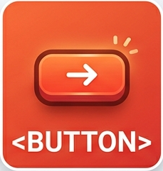
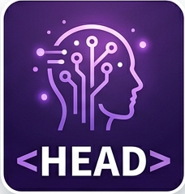
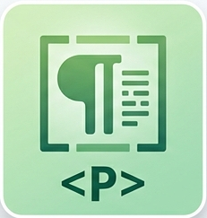
La web tiene que ser perceptible, operable, comprensible y robusta. Localizar de la forma más concisa, clara, con una buena estructura y legible.
Elegí la extensión de Google Chrome llamada Wave. Nos proporciona un cuadro de diálogo donde aparecen marcados los errores y los avisos.
Mucho caos al principio y mucha confusión para crear
código y mejorar la accesibilidad. En clase,
repetíamos lo visto anteriormente y reforzaba mis
conocimientos. Entendí los principio básicos de
localización web y accesibilidad.
He
conseguido crear
mi propia web alojada en mi
dispositivo personal, completamente funcional y
accesible para las personas con discapacidad.
He descubierto que me gustaría profundizar en
localización web y mejorar el ejercicio realizado en
clase.
➔ Semana 2
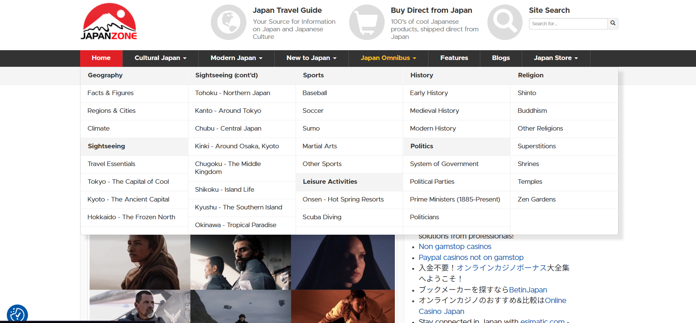
- Sitios web
- Metodología
- Elementos
- Ubicación de archivos
-
Tarea 2
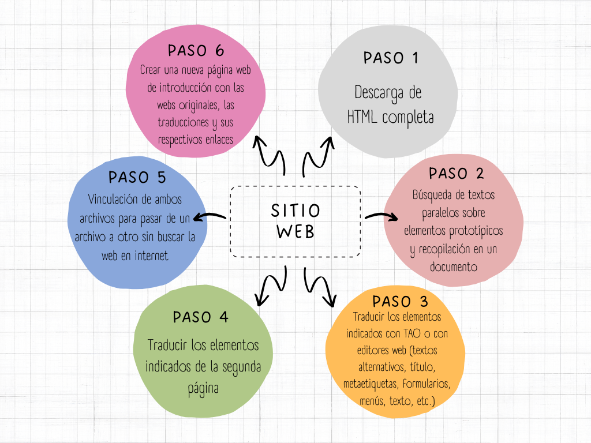
COMPROBAR QUE LOS ELEMENTOS QUE AFECTAN A LA ACCESIBILIDAD APARECEN Y ESTÁN BIEN TRADUCIDOS - Reflexión personal y resultados
Utilizamos una serie de webs. En mi caso, elegí la localización de la web Japan Zone. Aprendimos la diferencia entre webs completas (todas las imágenes, hojas de estilo, webs vinculadas, etc.) y solo el HTML.
Aprendimos a identificar dónde se guardan todos los elementos que componen una web. Muy útil para localizadores que se especialicen en web.
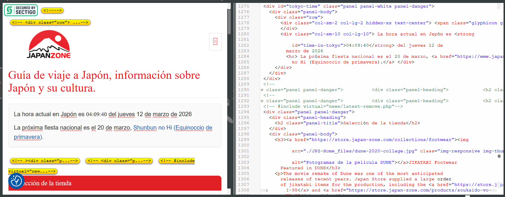
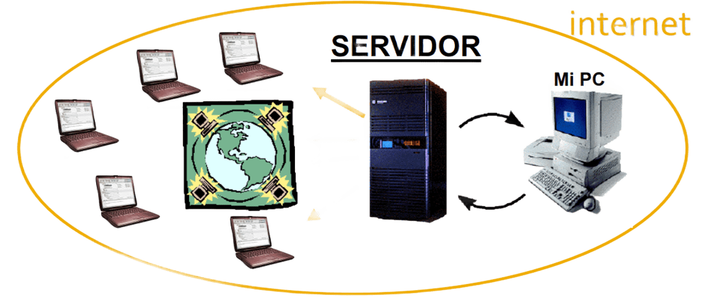
He adquirido una comprensión amplia de los
principios y técnicas de la localización de páginas
web completas. Esta práctica implica entender una
web como un sistema complejo de elementos
interdependientes.
Hemos aprendido a analizar
su macro y la micro estructura y la organización
cliente-servidor de sus archivos.
Para poder
traducir los elementos no visibles (metadatos,
textos alternativos), reconocer y gestionar los
elementos de la web ha resultado esencial.
➔ Semana 3
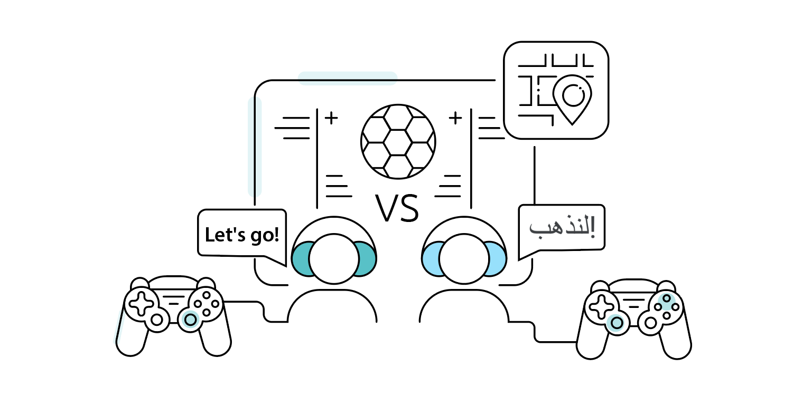
- Videojuegos
- Metodología
- Ejemplos de guías de estilos
- Recursos
- Reflexión personal y resultados
Durante esta semana, tuvimos un taller impartido por Victoria Nieto García en el que aprendimos las bases mediante un ejercicio con MemoQ. Aprendimos a que localizar es adaptar una obra a otro contexto cultural, técnico y funcional. Muy importante la coherencia y adecuación cultural para el disfrute de la experiencia completa de juego y se respeta la intención original del creador. Nos presentaron las guías de estilo, herramienta esencial ya que contiene aspectos lingüísticos, terminológicos y coherencia.

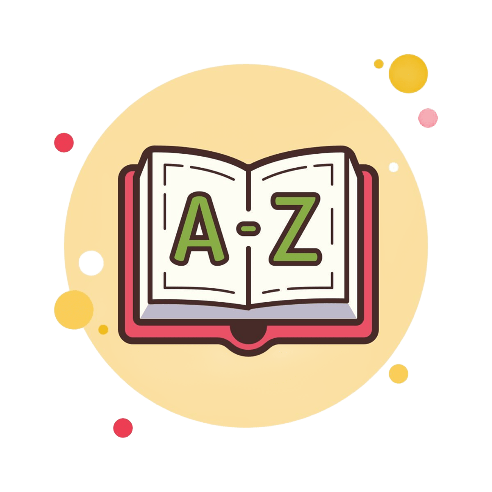
Glosarios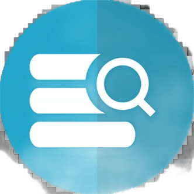
Memoria de TraducciónEsta clase me sirvió para descubrir a lo que me gustaría dedicarme una vez termine el máster. Obviamente, requiere de una mayor consciencia de todo el contexto y la interfaz debido a las guías de estilo proporcionadas por la empresa. Este hecho también me ha ayudado a mejorar la coherencia y calidad de mis decisiones al tener que aplicar consistentemente la guía de estilo.
➔ Semana 4
- Otros proyectos
 Software
Software
Mapa conceptual de la asignatura
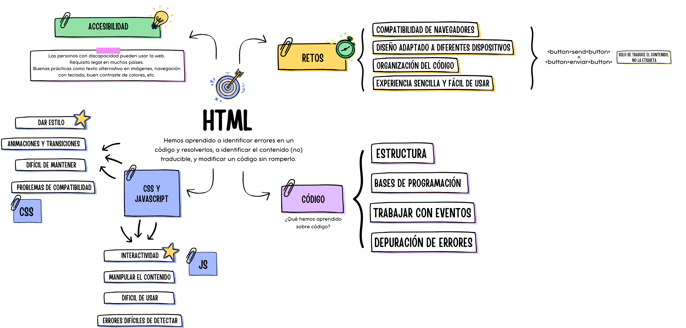
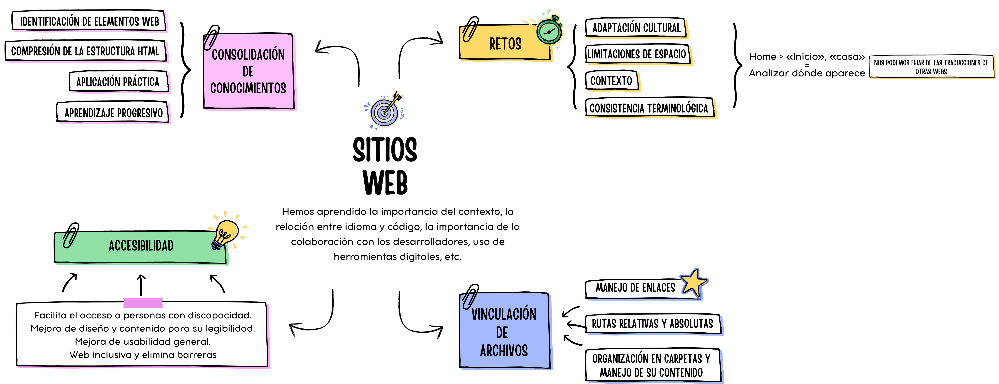
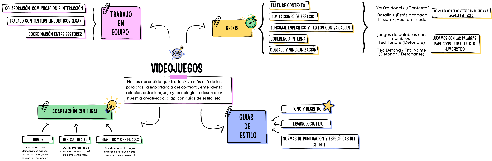
Proyectos
Recursos extra
Lista de referencias
-
Web de ejemplo
Prompt e info
Para hacerme aprender a generar una web, le pedí ayuda a un amigo que trabaja como programador. Con ayuda de la IA Claude, construyó una web de ejemplo que me ayudase a aprender a cómo crear una web. El prompt fue el siguiente:
"Yo: Hazme una web en html, css y js puro para poder preparar un ejercicio de traduccion, pon varios elemeentos de por ejemplos menos desplegables, cartas que den deescripciones, te lo dejo a tu imaginacion, lo importante que sea accesible para el traductor"
"Claude: Voy a crear una herramienta de preparación de ejercicios de traducción con diseño editorial elegante y varios widgets interactivos.Aquí tienes tu TransLab — una herramienta completa con 5 secciones: Vocabulario — Fichas con efecto flip (clic para voltear). Muestra el original, la traducción, un ejemplo en contexto y notas de registro. Incluye un panel de configuración de dificultad con sliders y etiquetas de tipo de texto seleccionables. Texto — Un fragmento periodístico real con marcador de texto interactivo: selecciona cualquier fragmento y pulsa el botón de categoría (Modismo, Falso amigo, Término clave) para colorearlo. Debajo, acordeones desplegables con análisis traductológico completo de cada expresión marcada. Trampas — Tarjetas con los errores más frecuentes: calcos sintácticos, falsos amigos, registro, referentes culturales, numerales y conectores. Cada una incluye un ejemplo de error vs. corrección.Checklist — Lista de pasos de preparación con barra de progreso. Marca cada tarea conforme la completes. Glosario — Tabla de términos con buscador en tiempo real. Filtra por cualquier palabra en español, inglés o tipo de término. Y siempre visible: un temporizador flotante para controlar el tiempo del ejercicio."
- Atributo Id
- Atributo Class
- Manual de HTML
- Elemento div
- Información sobre padding
- Información sobre margins
- Manual de JavaScript
- Expresiones y operaciones con JS
-
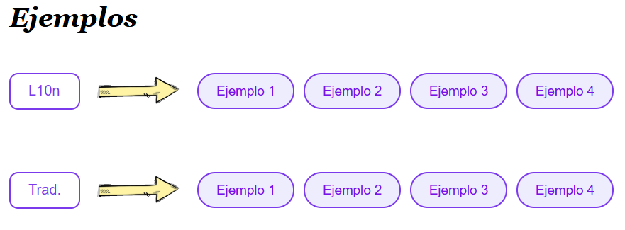
Prompt e info
Para la realización de la fila de ejemplos, le pedí a la IA Claude que la diseñara para saber cómo se aplicaba el CSS y cómo usar JavaScript para hacerla interactiva. Una vez establecido el prompt, la IA simplemente me generó el código. El prompt fue el siguiente:
"La fila de trad. tiene que estar debajo de la fila de L10n. Detrás de ejemplo 4 de la fila de L10n no debe haber flecha. El cuadro de Trad. tiene que medir lo mismo que el de L10n. Quiero que todos los cuadros sean en horizontal para que la frase quepa en una sola linea. Quiero que todos los cuadros aparezcan hacia arriba y se superpongan a todo lo que haya"
-
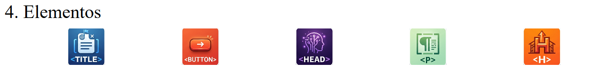
Prompt e info
Debido a la ausencia de imágenes que fueran significativas para crear iconos que representaran los elementos de HMLT, le pedí a la IA generativa de imágenes de Gemini, Nano Banana, que creara estos iconos. El prompt es el siguiente:
"Quiero que me generes 5 imágenes por separado en el que aparezcan los elementos html title, head, p, h, y button como si fuera un logo."
- Ver vídeo de referencia en YouTube
Sobre mí
Mi nombre es Nerea Iglesias y actualmente estoy cursando el Máster Universitario de Traducción y Mediación Cultural en la Universidad de Salamanca. Graduada en la promoción 2021/2025 en la carrera de Estudios Ingleses en la Universidad de salamanca.
Mi Trabajo de Fin de Máster (TFM) se enmarca en el ámbito de la localización de videojuegos. He trabajado como profesora de inglés dando clases de B1 y B2. Espero poder formarme en localización de videojuegos y poder dedicarme a ello en un futuro. Buen manejo de las tecnologías y experiencia con memorias de traducción y glosarios.
Autorizo a mis profesores para usar estos datos para posibles investigaciones futuras.